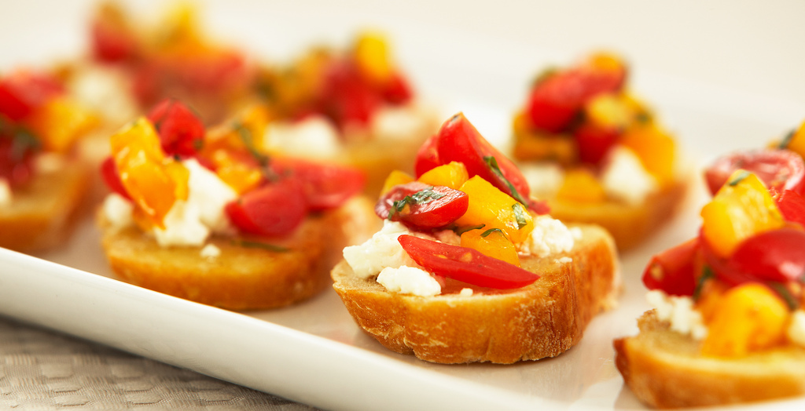

Serves: 4 people
Recommended Serving Size: 400g
Skill Level: 2/5
| Nutrional Value (400g) |
| Calories |
Fat (grams) |
Carbohydrates (grams) |
Protein (grams) |
| 139 |
5.1 |
20.3 |
3.2 |
Catering to dietary needs:
- Celiacs (Gluten Free): Bread can be replaced by gluten free bread
- Vegetarian
Ingredients
- 2 cup mixed ripe tomatoes
- 1 small bunch fresh basil
- Sea salt
- Ground black pepper
- Olive oil
- White wine or herb vinegar
- Grated parmesan

Method
- Preheat oven to 190°C
- Slice the bread 1cm thick and toast in the oven for 10-15 minutes (Tip: Remember to use oven mitts!)
- Lightly rub a cut clove of garlic, then drizzle with extra virgin olive oil and sprinkled with salt and pepper. Place aside.
- Wash the tomatoes, remove their cores and carefully squeeze out the seeds.
- Place in a bowl, tear the basil, season with salt and pepper, then add olive oil and vinegar to balance the flavours to your taste.
- Use a spoon to put the tomato mixture onto the toasted bread
- Top with parmesan cheese
- Voila!